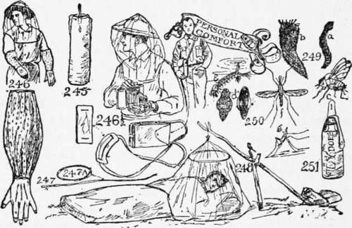

A Buckskin Man's Pocket
Description
This section is from the book "The Book Of Camp-Lore And Woodcraft", by Dan Beard. Also available from Amazon: The Book of Camp-Lore and Woodcraft.
A Buckskin Man's Pocket
When we speak of his pocket that includes all of his clothes, because on the inside of his coat, if he wears one, are stuck an array of safety pins (Fig. 234), but usually the pins are fastened onto his shirt. A safety pin is as useful to a man in camp as is a hairpin to a woman, and a woman can camp with no other outfit but a box of hairpins. One can use safety pins for clothespins when one's socks are drying at night, one can use them to pin up the blankets and thus make a sleeping-bag of them, or one can use them for the purpose of temporarily mending rips and tears in one's clothes. These are only a few of the uses of the safety pin on the trail. After one has traveled with safety pins one comes to believe that they are almost indispensable.
A Buckskin's Pocket
In one of the pockets there should be a lot of bachelor buttons, the sort that you do not have to sew on to your clothes, but which fasten with a snap, something like glove buttons. There should be a pocket made in your shirt or vest to fit your notebook (Fig. 244), and a part of it stitched up to hold a pencil and a toothbrush. Your mother can do this at home for you before you leave. Then you should have a good jack-knife; I always carry my jack-knife in my hip pocket. A pocket compass, one that you have tested before starting on your trip, should lodge comfortably in one of your pockets, and hitched in your belt should be your noggin carved from a burl from a tree (Fig. 235); it should be carried by slipping the toggle (Fig. 236) underneath the belt. Also in the belt you should carry some whang strings (Fig. 237); double the whang strings up so that the two ends come together, tuck the loop through your belt until it comes out at the other side, then put the two ends of the string through the loop and the whang strings are fast but easily pulled out when needed; whang strings are the same as belt lashings. A small whetstone (Fig. 238) can find a place somewhere about your clothes, probably in the other hip pocket, and it is most useful, not only with which to put an edge on your knife but also on your axe.
Inside the sweat band of your hat, or around the crown on the outside of your hat, carry a gut leader with mediumsized artificial flies attached, and around your neck knot a big gaudy bandanna handkerchief (Fig. 239); it is a most useful article; it can be used in which to carry your game, food or duffel, or for warmth, or worn over the head for protection from insects (Fig. 240). In the latter case put it on your head under your hat and allow it to hang over your shoulders like the havelock worn by the soldiers of '61.
Carry your belt axe thrust through your belt at your back (Fig. 241), where it will be out of the way, not at your side as you do on parade.
No camper, be he hunter, fisherman, scout, naturalist, explorer, prospector, soldier or lumberman, should go into the woods without a notebook and hard lead pencil (Fig. 242). Remember that notes made with a hard pencil will last longer than those made with ink, and be readable as long as the paper lasts.
Every scientist and every surveyor knows this and it is only tenderfeet, who use a soft pencil and fountain pen for making field notes, because an upset canoe will blur all ink marks and the constant rubbing of the pages of the book will smudge all soft pencil marks.
Therefore, have a pocket especially made (Fig. 244), so that your notebook, pencil and fountain pen (Fig. 243), if you insist upon including it—will fit snugly with no chance of dropping out; also make a separate pocket for your toothbrush which should be kept in an oil-skin bag (Fig. 243).
A piece of candle (Fig. 245) is not only a most convenient thing with which to light a fire on a rainy day, but it has ofttimes proved a life saver to Northern explorers benumbed with the cold.
It is a comparatively easy thing to light a candle under the shelter of one's hat or coat, even in a driving rain. When one's fingers are numb or even frosted, and with the candle flame one can start a life-saving fire; so do not forget your candle stub as a part of your pocket outfit.
In the black fly belt it is wise to add a bottle of fly dope (Fig. 251) to one's personal equipment. If you make your own fly dope have a slow fire and allow to simmer over it 3 oz. pine tar 2 oz. castor oil 1 oz. pennyroyal or heat 3 oz. of pine tar with two oz. of olive oil and then stir in 1 oz. of pennyroyal, 1 oz. of citronella, 1 oz. of creosote and 1 oz. of camphor.
If you propose traveling where there are black flies and mosquitoes, let your mother sew onto a pair of old kid gloves some chintz or calico sleeves that will reach from your wrists to above your elbow (Fig. 246), cut the tips of the fingers off the gloves so that you may be able to use your hands handily, and have an elastic in the top of the sleeve to hold them onto your arm. Rigged thus, the black flies and mosquitoes can only bite the ends of your fingers, and, sad to say, they will soon find where the ends of the fingers are located.
A piece of cheese cloth, fitted over the hat to hang down over the face, will protect that part of your anatomy from insects (Fig. 246), but if they are not very bad use fly dope (Fig. 251), and add a bottle of it to your pocket outfit. One doesn't look pretty when daubed up with fly dope, but we are in the woods for sport and adventure and not to look pretty. Our vanity case has no lip stick, rouge or face powder; it only possesses a toothbrush and a bottle of fly dope.
Certain times of year, when one goes camping in the neighborhood of the trout brooks, one needs to Be Prepared, for one can catch more trout and enjoy fishing better if protected against the attacks of the black flies, mosquitoes, midges and "no-see-ums."
Anything swung by a strap across one's shoulder will in time "cut" the shoulders painfully unless they are protected by a pad (Fig. 246 1/2). A few yards of mosquito netting or cheese cloth occupies little space and is of little weight, but is very useful as a protection at night. Bend a wand (Fig. 247) into a hoop and bind the ends together (Fig. 247A), with safety pins; pin this in the netting and suspend the net from its center by a stick (Fig. 248).
The black fly, C (Fig. 249), is a very small hump-backed pest, the young (larvae) (Fig. 249a) live in cold, clear running water; Fig. 249b is the cocoon.
There are many kinds of mosquitoes; all of them are Bolsheviks, and with the black flies and other vermin they argue that since nature made them with blood suckers and provided you with the sort of blood that they like, they have an inherent right to suck your blood—and they do it!
But some mosquitoes are regular Huns and professional germ carriers, and besides annoying one they skillfully insert the germs of malaria and yellow fever into one's system. The malaria mosquitoes are known as anopheles. The highbrow name for the United States malaria distributor is "Anopheles quadrimaculatus " (Fig. 250 F). It is only the females that you need fear; drone bees do not sting and buck mosquitoes do not bite.
Fig. 250d shows lower and upper side of the anopheles's egg. Fig. 250e is the wiggler or larvae of the anopheles; the anopheles likes to let the blood run to its head, and any careful observer will know him at a glance from his pose while resting (Fig. 250g).
Of course, you will not need fly dope on the picnic grounds, and you will not need your pocket compass on the turnpike hike, and you will not need your jack-knife with which to eat at the boarding house or hotel, but we Boy Scouts are the real thing; we go to hotels and boarding houses and picnics when we must, but not when we can find real adventure in wilder places. We shout:
There is life in the roar of plunging streams,
There is joy in the campfire's blaze at night.
Hark! the elk bugles, the panther screams!
And the shaggy bison roll and fight.
Let your throbbing heart surge and bound,
List to the whoop of the painted Reds;
Pass the flapjacks merrily round
As the gray wolf howls in the river beds.
We weary of our cushions of rest; God of our Fathers, give back our West. What care we for luxury and ease? Darn the tall houses, give us tall trees!
However crude these verses may be, the sentiment is all right. But may be it will express our idea better if we do not attempt rhyme. Suppose we try it this way Listen to the whistle of the marmots;
The hooting of the barred owl, the bugling of the elk!
The yap, yap, yap of the coyote, the wild laugh of the loon;
The dismal howl of the timber wolf,
The grunting of the bull moose, the roaring of the torrent, And the crashing thunder of the avalanche!
Ah, that's the talk; these are the words and sounds that make the blood in one's veins tingle like ginger ale. Why do all red-blooded men and real American boys like to hear
The crunching of the dry snow;
The flap, flap, flap of snowshoes;
The clinking of the spurs and bits;
The creaking of the saddle leather;
The breathing of the bronco;
The babbling of the rivulet;
The whisper of the pines,
The twitter of the birds,
And the droning of bees.
Why? Because in these sounds we get the dampness of the moss, the almond-like odor of twin flowers, the burning dryness of the sand, the sting of the frost, the grit of the rocks and the tang of old mother earth! They possess the magic power of suggestion. By simply repeating these words we transport our souls to the wilderness, set our spirits free, and we are once again what God made us; natural and normal boys, listening to nature's great runes, odes, epics, lyrics, poems, ballads and roundelays, as sung by God's own bards!
Packing
When packing, remember that a partly filled bag (Fig. 252) is easy to pack, easy to carry on one's shoulders; but a tightly filled bag (Fig. 253) is a nuisance on the trail. When
Making a Pack
Making A Pack
To ship as baggage, fold the blankets lengthwise (Fig. 254), place them in the middle of your tarpaulin or floor cloth (Fig. 254); fold the cover over (Fig. 255), then tuck in the ends and roll the package into a bundle and cinch (Figs. 255 and 256). A
Sleeping-Bag
Can be improvised from one's blankets by the use of safety pins (Fig. 257). A section of the bag (Fig. 258) shows how the blankets are doubled. To make a
Back Pack
Fold as in Fig. 259, then bend up the end as indicated by Figs. 260 and 261, fold again, Fig. 262, then fold in the two edges, Figs. 263 and 264, which show both sides of pack; bend over the top, Figs. 265 and 266, and strap ready to carry, Figs. 267 and 268. For a
Blanket Roll
Fold as in Fig. 269; bend in the ends and roll (Fig. 270). Strap or lash the ends together (Fig. 271).
Continue to: